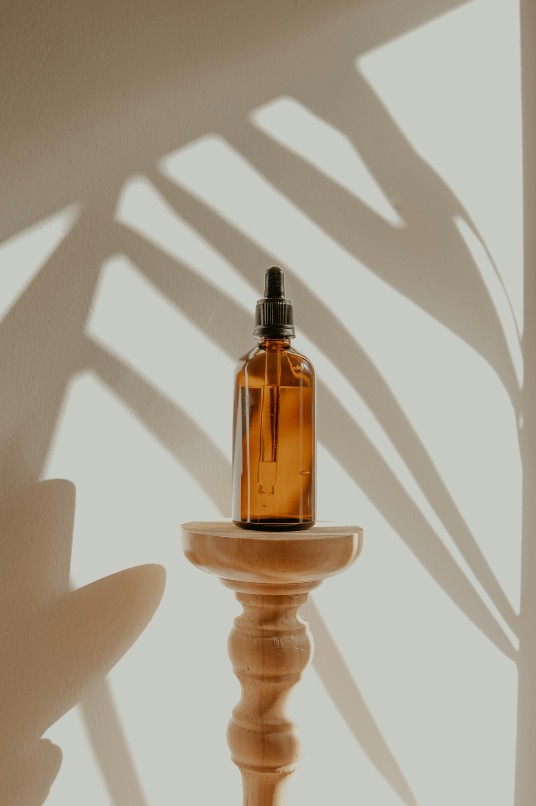
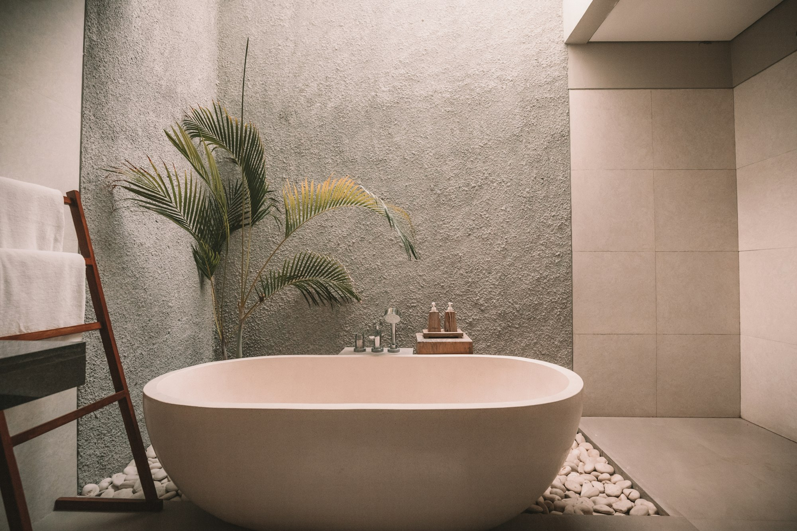

Menos carga de estrés
El ritmo lento ayuda a bajar el tono del sistema nervioso.
Salud
Un masaje profesional no es un tratamiento médico. Sí puede apoyar cómo el cuerpo maneja el estrés, el sueño, la tensión y la recuperación.
El ritmo lento ayuda a bajar el tono del sistema nervioso.

Cuando el cuerpo deja de estar en alerta, el sueño suele llegar antes.

Cuello, hombros y lumbar sueltan la guardia del día.

Tras horas sentado, el masaje favorece una sensación de ligereza.

El cuerpo del viajero llega contraído. Una sesión in situ ayuda a reorganizarlo.
Caminar Medellín pide a gemelos y fascia. El masaje puede acelerar la recuperación sentida.
Si hay lesión aguda o fiebre, escribe antes de reservar.